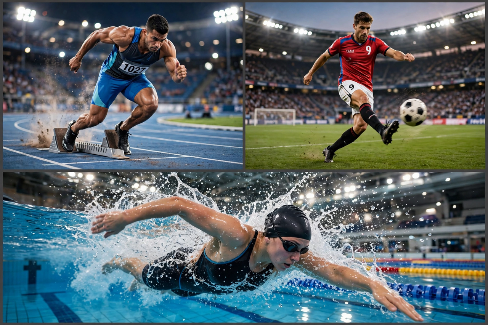

From Wikipedia, the free encyclopedia
| Sport | |
|---|---|
 Athletes competing in several sports — a sprinter leaving the blocks, a footballer striking a ball, a swimmer mid-stroke — a montage of sporting action | |
| Highest governing bodies | Vary by sport (e.g. FIFA, IOC, World Athletics) |
| First played | Antiquity (organised sport by c. 2000 BC in Egypt and Mesopotamia) |
| Characteristics | Physical exertion, skill, competition, rules |
| Glossary | Glossary of sports terms |
| Presence | Worldwide; Olympic Games since 776 BC (ancient), 1896 (modern) |
Sport is a form of physical activity or game. Often competitive and organised, sports use, maintain, or improve physical ability and skills. They typically provide enjoyment to participants and, in some cases, entertainment to spectators. Many sports exist, with different participant numbers, some are done by a single person with others doing it in teams.
Sport is generally recognised as system of activities based in physical athleticism or physical dexterity, with major competitions admitting only sports meeting this definition. Some organisations, such as the Council of Europe, preclude activities without any physical element from classification as sports. However, a number of competitive, but non-physical, activities claim recognition as mind sports. The International Olympic Committee recognises both chess and bridge as sports.
There are opposing views on the necessity of competition as a defining element of a sport, with almost all professional sports involving competition, and governing bodies requiring competition as a prerequisite of recognition by the IOC and GAISF (now SportAccord). Other bodies advocate widening the definition of sport to include all physical activity. For instance, the Council of Europe includes all forms of physical exercise, including those completed just for fun.
Artifacts and structures suggest sport in China as early as 2000 BC. Gymnastics appears to have been popular in China's ancient past. Monuments to the pharaohs indicate that a range of sports, including swimming and fishing, were well-developed and regulated several thousands of years ago in ancient Egypt. The ancient Olympic Games, held in Olympia, Greece, from 776 BC, became the model for the modern Games, revived in Athens in 1896. The Industrial Revolution and mass production brought increased leisure time, letting spectatorship and accessibility of sports grow, trends that continue today through mass media and global communication.
Sporting competition can be measured by an outcome or judged by style (as in figure skating and gymnastics). Sportsmanship and fair play are central ideals; cheating, doping and match-fixing are treated as serious offences policed by governing bodies such as the World Anti-Doping Agency.
The entertainment aspect of sport, together with the spread of mass media and increased leisure time, has led to professionalism in sport, so that many athletes make a career out of competing. The world's most-watched sporting events include the FIFA World Cup, the Olympic Games, the Cricket World Cup and the UEFA Champions League. See the Sports portal for featured content.
Categories: Sport | Physical exercise | Games